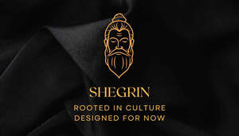
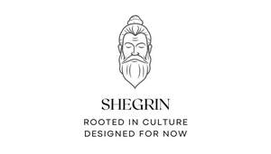

Trade Mark Journal No.2026/007 13 February 2026
UK00004333124 31 January 2026 (30)
Mark 1

Mark 2

- Class 30
- Tea; Herbal tea; Tea beverages; Tea bags for making non-medicated tea; Tea for infusions; Tea bags; Barley tea; Tea extracts; Tea leaves; Flavourings of tea; Teas; Herb tea [infusions]; Instant tea; Tea mixtures; Tea (Non-medicated -); Tea substitutes; Herbal tea [other than for medicinal use]; Artificial tea; Beverages made of tea; Non-medicinal herbal tea; Herbal teas; Tea beverages (Non-medicated -); Packaged tea [other than for medicinal use]; Apple flavoured tea [other than for medicinal use]; Tea bags (Non-medicated -); Coffee; Artificial tea [other than for medicinal use]; Tea extracts (Non-medicated -); Coffee, teas and cocoa and substitutes therefor; Herbal teas [infusions]; Tea essences (Non-medicated -); Decaffeinated coffee; Iced coffee; Chocolate coffee; Coffee drinks; Coffee beans; Mixtures of malt coffee with coffee; Coffee beverages; Coffee extracts for use as substitutes for coffee; Coffee essences for use as substitutes for coffee; Coffee substitutes [artificial coffee or vegetable preparations for use as coffee]; Coffee bags; Coffee flavorings; Coffee flavourings; Coffee substitutes; Mixtures of coffee; Chai tea; Chocolate; Chocolate truffles; Chocolate fudge; Chocolate brownies; Chocolate marzipan; Chocolate sweets; Chocolate confectionery; Chocolate candies; Chocolate confectionary; Chocolate cake; Milk chocolate; Chocolate caramel wafers; Chocolate confections; Chocolate desserts; Chocolate biscuits; Chocolate fondue; Chocolate cakes; Dairy-free chocolate; Chocolate waffles; Chocolate pastries; Chocolate syrup; Milk chocolate teacakes; Chocolate wafers; Chocolate chips; Dairy chocolate; Milk chocolate bars; Chocolate flavoured confectionery; Chocolate bunnies; Hot chocolate; Chocolate creams; Chocolate bars; Chocolate sauce; Mousses (Chocolate -); Chocolate mousses; Chocolate for confectionery and bread; Chocolate eggs; Shortbread with a chocolate coating; Chocolate syrups; Chocolate beverages; Chocolate powder; Chocolate vermicelli; Chocolate flavourings; Chocolate coated biscuits; Chocolate candy with fillings; Chocolate sauces; Deep chocolate cake made with chocolate sponge; Drinking chocolate; Chocolate for toppings; Chocolate coating; Chocolate covered biscuits; Chocolate confectionery having a praline flavour; Pralines made of chocolate; Chocolate coated nougat bars; Chocolate topping; Chocolate confectionery containing pralines; Chocolate beverages with milk; Shortbread with a chocolate flavoured coating; Vegan hot chocolate; Almonds covered in chocolate; Chocolate coated marshmallow biscuits containing toffee; Chocolate flavoured beverages; Waffles with a chocolate coating; Chocolate drink preparations flavoured with mocha; Aerated chocolate; Non-medicated chocolate confectionery; Candy with cocoa; Chocolate covered wafer biscuits; Ice creams flavoured with chocolate; Chocolate flavoured coatings; Chocolate coated nuts; Chocolate coated fruits; Filled chocolate; Chocolate confectionery products; Confectionery chocolate products; Non-medicated chocolate; Substitutes (Chocolate -); Sweets (Non-medicated -) in the nature of chocolate eclairs; Milk chocolates; Chocolate syrups for the preparation of chocolate based beverages; Chocolates; Chocolate pastes; Chocolate drink preparations flavoured with banana; Shortbread part coated with chocolate; Aerated beverages [with coffee, cocoa or chocolate base]; Confectionery items coated with chocolate; Chocolate coated macadamia nuts; Chocolate spread; Truffles [confectionery]; Almond confectionery; Caramel; Confectionery; Chocolate-coated sugar confectionery; Sugar confectionery; Confectionery products (Non-medicated -); Coated nuts [confectionery]; Candies [sweets]; Pastila [confectionery]; Caramels [sweets]; Snack foods consisting principally of confectionery; Seasonings; Flavorings and seasonings; Flavourings and seasonings; Chili seasonings; Salts, seasonings, flavourings and condiments; Food seasonings; Dry seasonings; Spices; Seasoning mixes; Herbal teas, other than for medicinal use; Herbal infusions [other than for medicinal use]; Aromatic teas [other than for medicinal use]; Herbal infusions; Infusions, not medicinal.
SHEGRIN LIMITED